Полезно
Вы можете заказать разработку шаблона на платной основе, обратившись в службу поддержки.
Этикетки могут быть напечатаны:
Типы принтеров
- На обычных А4 принтерах. Можно использовать как обычную бумагу, так и специальную самоклеящуюся, с перфорацией для удобного отрыва наклейки.
- На принтерах этикеток. В термопринтер можно установить рулонные этикетки различного формата и размера.
Полезные материалы
Подготовка списка товаров вручную
Если необходимо распечатать этикетки на товары, которые уже есть в каталоге, можно воспользоваться разделом «Этикетки». На главной форме в меню нажмите Товары – Этикетки, чтобы открыть указанный раздел.
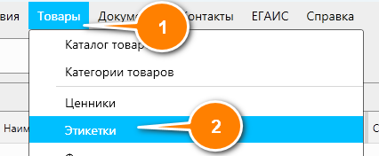
После этого откроется пустой список, показанный на скриншоте ниже.
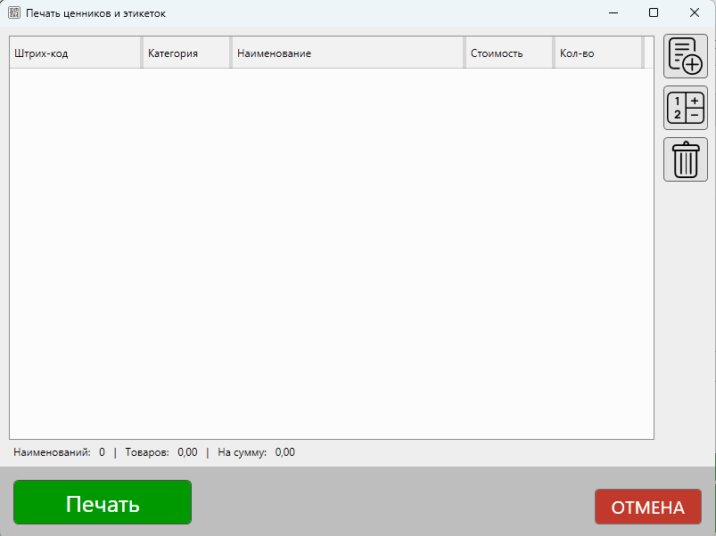
В этот список необходимо добавить товары, для которых будут печататься этикетки. Справа от списка нажмите кнопку Добавить – отобразится форма поиска товаров, в которой вы сможете выбрать необходимые позиции.
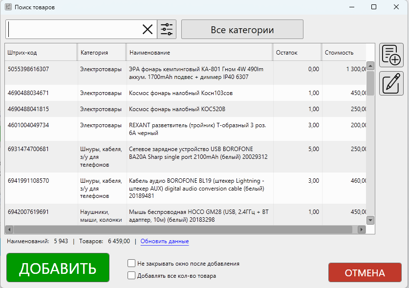
В поле поиска вы можете ввести название товара или выбрать другие параметры для поиска. В т.ч. можно воспользоваться сканером для поиска товаров по штрихкоду.
Совет
Если монитор на рабочем месте позволяет, вы можете разместить список товаров и форму поиска рядом друг с другом и включить опцию Не закрывать окно после добавления. Таким образом, вы будете видеть и список товаров для печати, и результаты поиска одновременно.
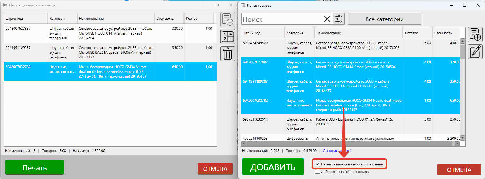
Также вы можете выбрать сразу несколько позиций в форме поиска с использованием стандартных горячих клавиш:
Горячие клавиши
- Зажмите
Ctrlи выделите несколько позиций в любом порядке. - Зажмите
Shift, выделите первую и последнюю позиции – между ними товары будут также выделены. - Нажмите
Ctrl+A, чтобы выделить все позиции в результатах поиска.
Печать этикеток для товаров из накладной
Кроме ручного формирования списка товаров для печати этикеток, в программе доступна возможность формирования списка из поступивших накладных. Откройте журнал поступлений, нажав на главной форме в меню: Документы – Журнал поступлений.
В открывшемся списке накладных выберите одну или несколько накладных, а затем нажмите кнопку Печатать и выберите Этикетки.
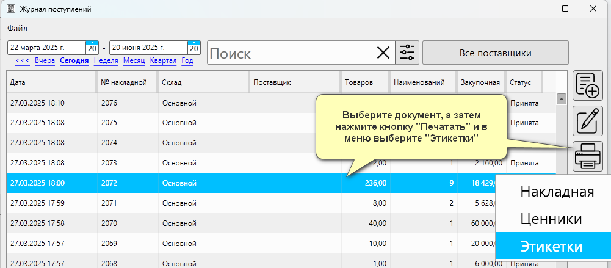
После этого откроется окно со списком, в котором будут товары из выбранных накладных. Для каждого товара будет установлено количество, равное количеству данного товара, указанного в карточке накладной. То есть если в накладной указано 60 единиц товаров, то и к печати будет подготовлено 60 этикеток.
Редактирование списка товаров для печати этикеток
После того как необходимые товары будут добавлены в список, проверьте и при необходимости укажите количество этикеток, которые необходимо распечатать для товара. Вы можете добавить или удалить лишнее количество из списка, нажимая соответствующие кнопки.
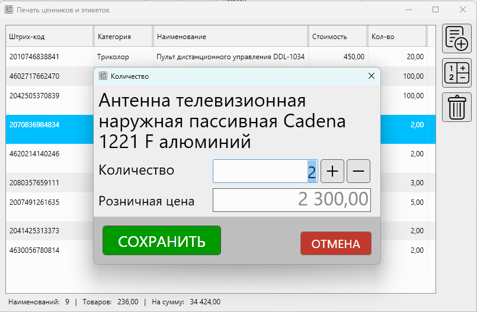
Отправка этикеток на печать
Когда список товаров будет готов, нажмите Печать
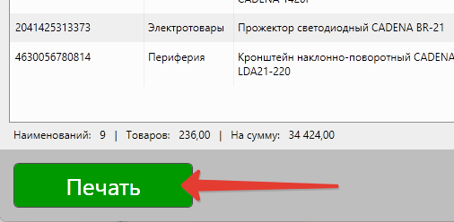
Программа предложит выбрать доступный шаблон для печати из списка:
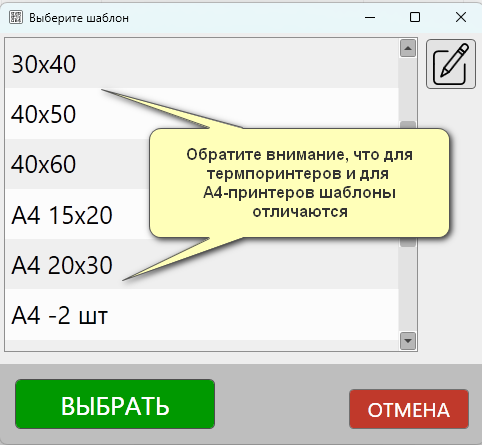
Выберите необходимый шаблон и нажмите Выбрать (или кликните дважды на шаблон), чтобы продолжить. Откроется окно предварительного просмотра, где вы увидите этикетки в том виде, в котором они будут переданы на печать.
Важно
Обратите внимание на тип шаблонов: в списке представлены как просто размеры, так и размеры с пометкой «А4». Первые предназначены для печати на термопринтерах. Вторые - для печати на «обычных» А4-принтерах.
При выборе шаблона, предназначенного для термопринтера, каждая этикетка в окне предварительного просмотра расположена на отдельном листе и будет напечатана отдельно.
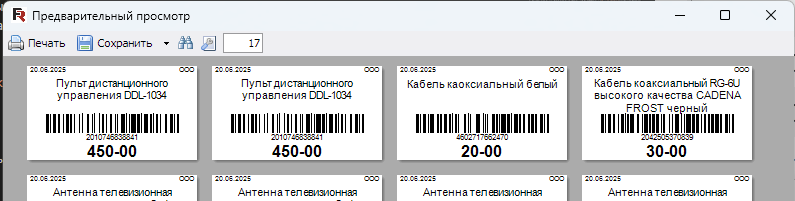
Шаблоны с пометкой «А4» предназначены для печати этикеток на одном (или нескольких, если много) листе формата А4. Шаблоны такого типа предназначены для печати на обычных принтерах.
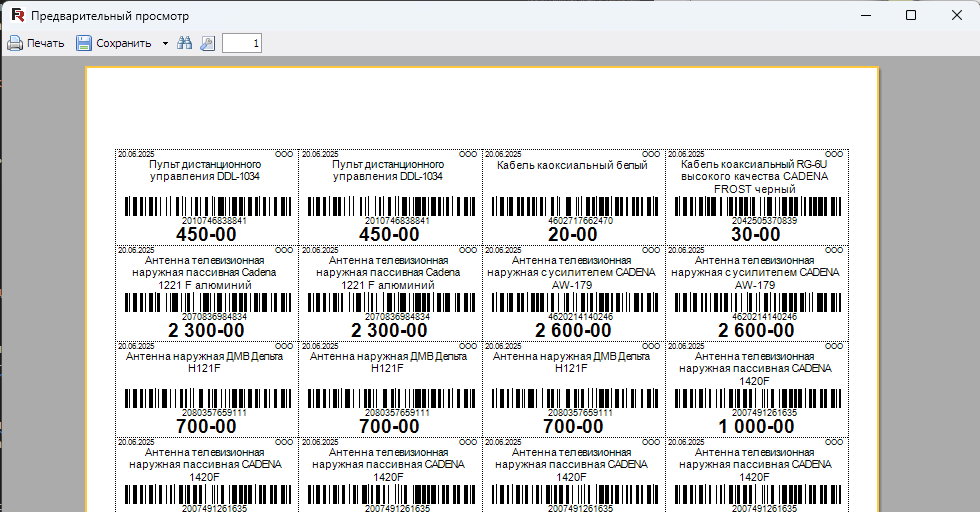
Важно
Отображение окна предпросмотра этикеток зависит от настроек. При необходимости вы можете указать принтер, на котором будут печататься этикетки, минуя окно предпросмотра и выбор принтера.
Для перехода к выбору принтера в верхней части окна предпросмотра нажмите кнопку Печать
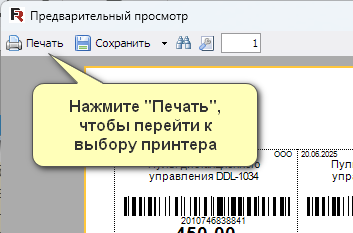
В следующем окне выберите принтер, на котором будут распечатаны этикетки, и укажите дополнительные параметры, если это необходимо. По готовности нажмите Печать – документы будут отправлены на выбранный принтер.
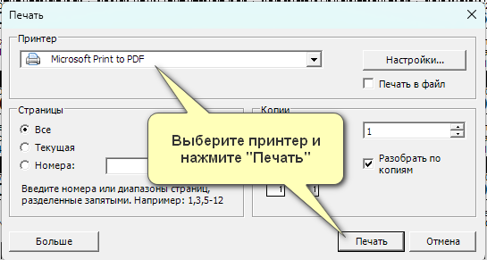
Сохранение этикеток в PFD, Word, Excel и другие форматы
Если есть необходимость в сохранении этикеток в формат офисного документа, вы можете сделать это из окна предпросмотра, нажав на кнопку Сохранить и выбрав необходимый формат документа.
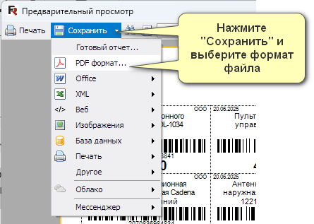
Доступные форматы
- PDF - для печати на другом компьютере
- Word - для редактирования в Microsoft Word
- Excel - для работы с данными в таблицах
- Другие офисные форматы
Например, этикетки можно сохранить в PDF и распечатать на другом компьютере, если на текущем нет доступа к принтеру. Это может быть полезно в случае использования программы в режиме «Дом\офис». Вы можете подготовить PDF-документ с этикетками и отправить его сотрудникам в торговую точку, где они распечатают присланный документ.
Вопросы и ответы
Какие принтеры этикеток поддерживаются?
GBS.Market позволяет печатать этикетки практически на любом принтере. Главное, чтобы он в Windows определялся как "обычный" принтер. Например, можно использовать такие модели:
Поддерживаемые модели
- MERTECH Terra Nova TLP300, MERTECH Gamma
- XPrinter-350B, XPrinter-365B
- Zebra LP/TLP 2824, Zebra GK420t, Zebra ZD410
- АТОЛ BP21, АТОЛ BP41
Полезные материалы
Есть ли поддержка протокола ZPL для печати этикеток?
Да, в кассовой программе GBS.Market есть возможность печатать этикетки на ZPL-совместимых принтерах. В ряде случаев печать через ZPL-протокол может увеличить скорость и качество печати. Включить ZPL-печать можно через настройки:
Настройка ZPL-печати
- на главной форме в меню откройте Файл - Настройки
- перейдите в раздел Оборудование
- откройте вкладку Печать этикеток
- для опции Тип печати укажите значение ZPL-печать
Можно ли изменить формат этикетки?
При необходимости вы можете внести изменения во внешний вид и размер этикетки. Сделать это можно через редактирование шаблонов или заказать редактирование шаблона на платой основе через службу поддержки.